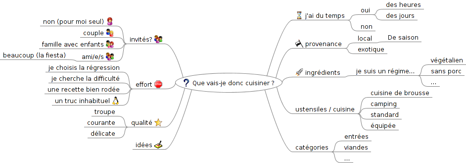

Que vais-je donc cuisiner ?

Que vais-je donc cuisiner ?
j'ai du temps
oui
des heures
des jours
non
invités?
non (pour moi seul)
couple
famille avec enfants
ami/e/s
beaucoup (la fiesta)
provenance
local
De saison
exotique
effort
je choisis la régression
je cherche la difficulté
une recette bien rodée
un truc inhabituel
ingrédients
je suis un régime...
végétalien
sans porc
...
qualité
troupe
courante
délicate
ustensiles / cuisine
cuisine de brousse
camping
standard
équipée
idées
http://www.quecuisiner.fr/Recherche_Simple.html
http://www.unjourunerecette.fr/que-manger-ce-soir
catégories
entrées
viandes
...